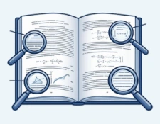

SciResearchBench
Benchmarking AI Agents on Complex Scientific Literature Discovery
科研搜索既要找得准，也要找得全。SciResearchBench 设计了两类任务。深度搜索要求智能体顺着零散线索锁定一篇目标论文，广度搜索要求找全满足多个条件的研究，答案数量事先未知。配套的科学问答智能体用于比较搜索策略，追踪线索中断和漏检发生在哪一步。参评系统的最佳成绩分别为 9.39% 的定位准确率和 9.31% 的结果集交并比。